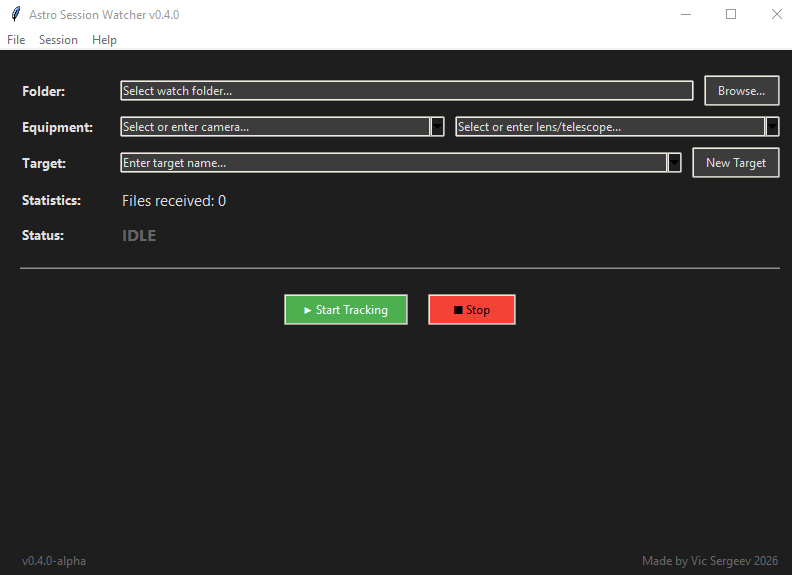

🔭 Astro Session Watcher (Freeware)
Automatically track, sort, and log your astrophotography sessions
Screenshot: Astro Session Watcher main interface

📸 What is it for?
- Automatically distribute shots into target folders
- Keep a log of each session
- Don't miss a single frame when changing targets
- Store equipment and celestial bodies history
🚀 How it works?
- Select the folder where your camera saves photos
- The app creates a session folder:
AstroSession_YYYY-MM-DD - Each target gets its own subfolder inside the session folder
- When you change target (press "New Target"), all accumulated files are moved
- When you end the session, remaining files are moved to the last target
⌨️ Hotkeys
| Ctrl+O | Select watch folder |
| Ctrl+E | Equipment management |
| Ctrl+B | Celestial bodies management |
| Ctrl+S | Start session |
| Ctrl+X | Stop session |
| Ctrl+F | Open current session folder |
| Ctrl+Shift+N | Create new target |
| F1 | About |
| F2 | Show instructions |
🔧 Config Files
astro_settings.json← cameras, lenses, last foldercelestial_bodies.json← list of celestial bodies
All files are stored in the program folder. You can edit them manually.
Download
Application now in alpha stage, there might be malfunctions: